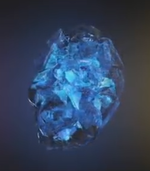

| Name |
Color |
Powers and capabilities |
Image |
| Soul |
Orange |
According to Wong's ancient texts, the Soul Stone could prove to be the greatest threat out of all the Infinity Stones.[18] Gamora knew of the location of the Soul Stone from a map she found to its whereabouts (which she burnt) but kept this a secret from Thanos.Once captured and interrogated by her father, whom tortured Gamora's sister Nebula, he took her to its holding place on Vormir, where Red Skull, the Soul Stone's guardian, told them that it could only be accessed after a personal cost was paid - namely, the sacrifice of a loved one, to ensure that the owner understood its power. Thanos then tearfully sacrificed his daughter and later woke up with the Soul Stone in his hand, adding it to the Infinity Gauntlet shortly thereafter before heading off to retrieve the Time and Mind Stones. |
 |
| Time |
Green |
According to Wong's ancient texts, the Soul Stone could prove to be the greatest threat out of all the Infinity Stones.[18] Gamora knew of the location of the Soul Stone from a map she found to its whereabouts (which she burnt) but kept this a secret from Thanos.Once captured and interrogated by her father, whom tortured Gamora's sister Nebula, he took her to its holding place on Vormir, where Red Skull, the Soul Stone's guardian, told them that it could only be accessed after a personal cost was paid - namely, the sacrifice of a loved one, to ensure that the owner understood its power. Thanos then tearfully sacrificed his daughter and later woke up with the Soul Stone in his hand, adding it to the Infinity Gauntlet shortly thereafter before heading off to retrieve the Time and Mind Stones. |
 |
| Space |
Blue |
According to Wong's ancient texts, the Soul Stone could prove to be the greatest threat out of all the Infinity Stones.[18] Gamora knew of the location of the Soul Stone from a map she found to its whereabouts (which she burnt) but kept this a secret from Thanos.Once captured and interrogated by her father, whom tortured Gamora's sister Nebula, he took her to its holding place on Vormir, where Red Skull, the Soul Stone's guardian, told them that it could only be accessed after a personal cost was paid - namely, the sacrifice of a loved one, to ensure that the owner understood its power. Thanos then tearfully sacrificed his daughter and later woke up with the Soul Stone in his hand, adding it to the Infinity Gauntlet shortly thereafter before heading off to retrieve the Time and Mind Stones. |
 |
| Mind |
Yellow |
According to Wong's ancient texts, the Soul Stone could prove to be the greatest threat out of all the Infinity Stones.[18] Gamora knew of the location of the Soul Stone from a map she found to its whereabouts (which she burnt) but kept this a secret from Thanos.Once captured and interrogated by her father, whom tortured Gamora's sister Nebula, he took her to its holding place on Vormir, where Red Skull, the Soul Stone's guardian, told them that it could only be accessed after a personal cost was paid - namely, the sacrifice of a loved one, to ensure that the owner understood its power. Thanos then tearfully sacrificed his daughter and later woke up with the Soul Stone in his hand, adding it to the Infinity Gauntlet shortly thereafter before heading off to retrieve the Time and Mind Stones. |
 |
| Reality |
Red |
According to Wong's ancient texts, the Soul Stone could prove to be the greatest threat out of all the Infinity Stones.[18] Gamora knew of the location of the Soul Stone from a map she found to its whereabouts (which she burnt) but kept this a secret from Thanos.Once captured and interrogated by her father, whom tortured Gamora's sister Nebula, he took her to its holding place on Vormir, where Red Skull, the Soul Stone's guardian, told them that it could only be accessed after a personal cost was paid - namely, the sacrifice of a loved one, to ensure that the owner understood its power. Thanos then tearfully sacrificed his daughter and later woke up with the Soul Stone in his hand, adding it to the Infinity Gauntlet shortly thereafter before heading off to retrieve the Time and Mind Stones. |
 |
| Power |
Purple |
According to Wong's ancient texts, the Soul Stone could prove to be the greatest threat out of all the Infinity Stones.[18] Gamora knew of the location of the Soul Stone from a map she found to its whereabouts (which she burnt) but kept this a secret from Thanos.Once captured and interrogated by her father, whom tortured Gamora's sister Nebula, he took her to its holding place on Vormir, where Red Skull, the Soul Stone's guardian, told them that it could only be accessed after a personal cost was paid - namely, the sacrifice of a loved one, to ensure that the owner understood its power. Thanos then tearfully sacrificed his daughter and later woke up with the Soul Stone in his hand, adding it to the Infinity Gauntlet shortly thereafter before heading off to retrieve the Time and Mind Stones. |
 |